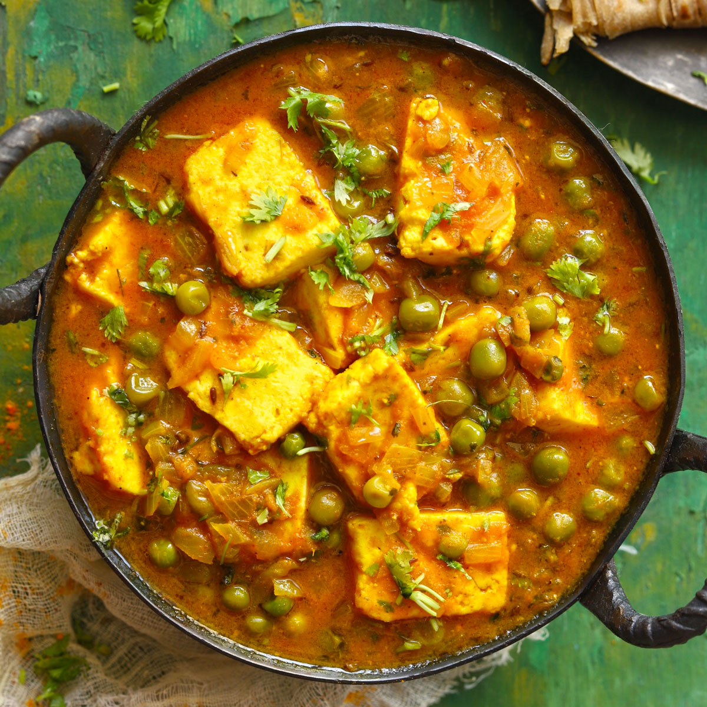

Matar Paneer

Matar Paneer, also known as Mutter Paneer, is a delightful North Indian dish that combines paneer (Indian cottage
cheese) and green peas in a rich, flavorful curry.
Here’s how you can make it at home.
Ingredients
- 1 tablespoon oil
- 2 green cardamoms (optional, omit if you don’t like)
- 3-8 grams garlic (medium-sized cloves)
- 1-inch ginger (peeled & sliced/chopped)
- 1 cup onions (cubed, 1 large or 2 medium)
- 340 grams tomatoes (2 to 3 large, finely chopped)
- 12-20 grams cashew nuts (or almonds, soaked for 2 hours and blanched)
- ½ teaspoon salt
- ⅓ cup curd (yogurt, optional)
- 1 ½ tablespoons oil (or ghee)
- 1-inch cinnamon (dalchini, optional)
- 1 small bay leaf (optional)
- ¼ teaspoon turmeric
- 1 teaspoon red chilli powder (adjust to taste)
- 1 teaspoon garam masala (adjust to taste)
- ¾ teaspoon coriander powder
- 1 teaspoon sugar
- 1 cup green peas (matar, boiled or frozen)
- 1 ¼ cups water (use more if needed)
- 1 green chilli (deseeded & slit, optional)
- 250 grams paneer (Indian cottage cheese)
- 1 teaspoon kasuri methi (dried fenugreek leaves)
- ¼ teaspoon salt (as needed, about 1/4 to 1/2 tsp)
- 2 tablespoons coriander leaves (cilantro)
- 4 tablespoons cream (optional)
Steps
- Heat 1 tablespoon of oil in a pan. Add 1 to 2 green cardamoms (optional) and sauté garlic,
ginger, and onions until lightly browned.
- Add finely chopped tomatoes and cashew nuts. Cook until the tomatoes turn soft.
- Allow the mixture to cool and blend it into a smooth paste.
- Heat 1 ½ tablespoons of oil (or ghee) in the same pan. Add cinnamon, bay leaf, turmeric, red
chili powder, garam masala, coriander powder, and sugar. Sauté for a minute.
- Add the tomato-onion paste and simmer with water until a thick consistency is achieved.
- Add green peas and paneer. Simmer until the peas are tender.
- Garnish with kasuri methi, coriander leaves, and cream (optional).
- Serve your delicious Matar Paneer with steamed Basmati rice, naan, or any flatbread of your
choice.